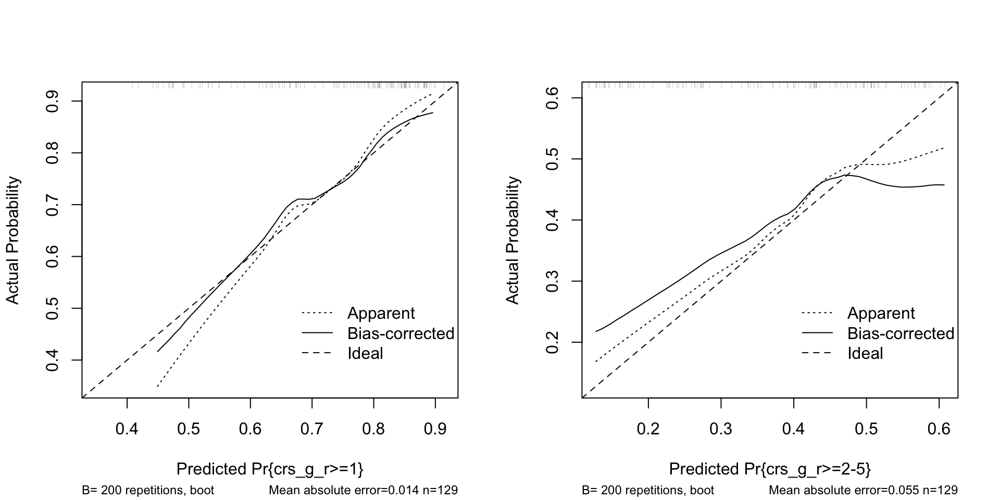
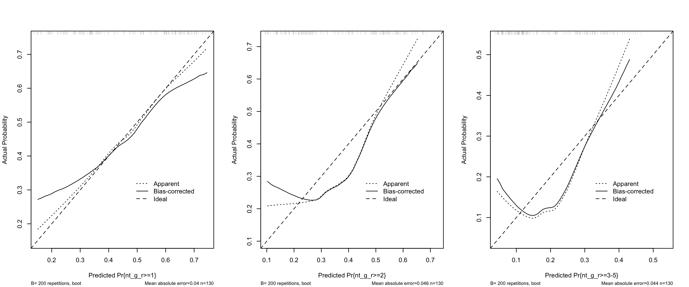
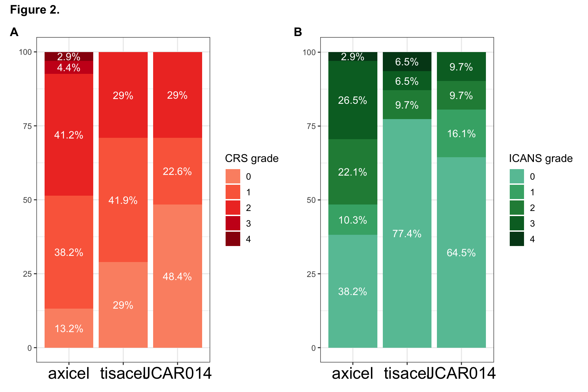
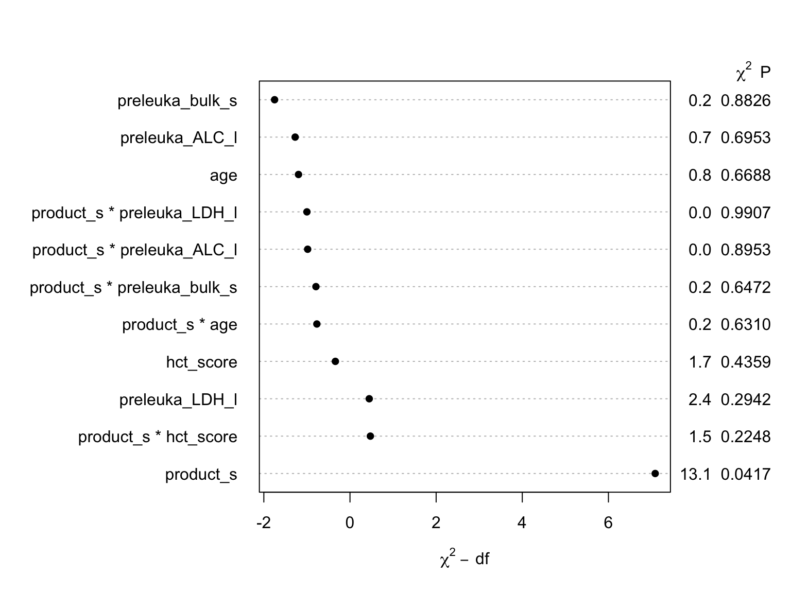
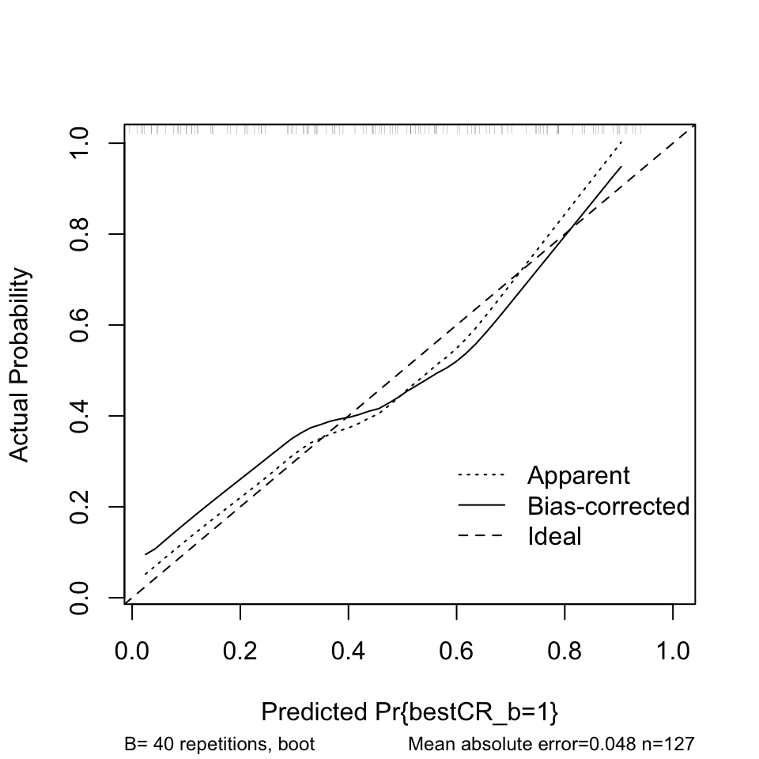
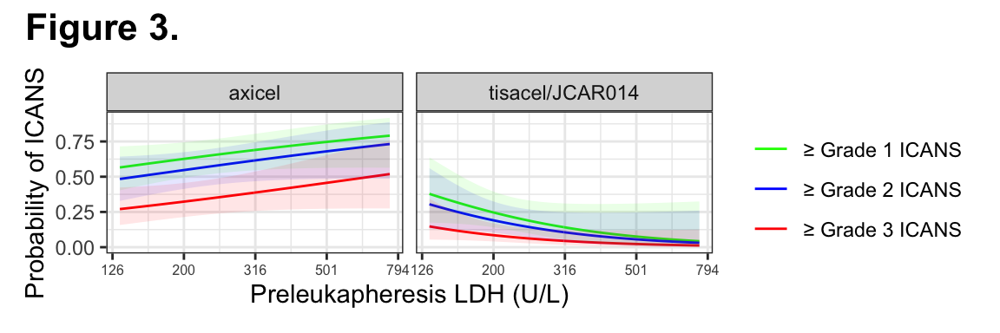
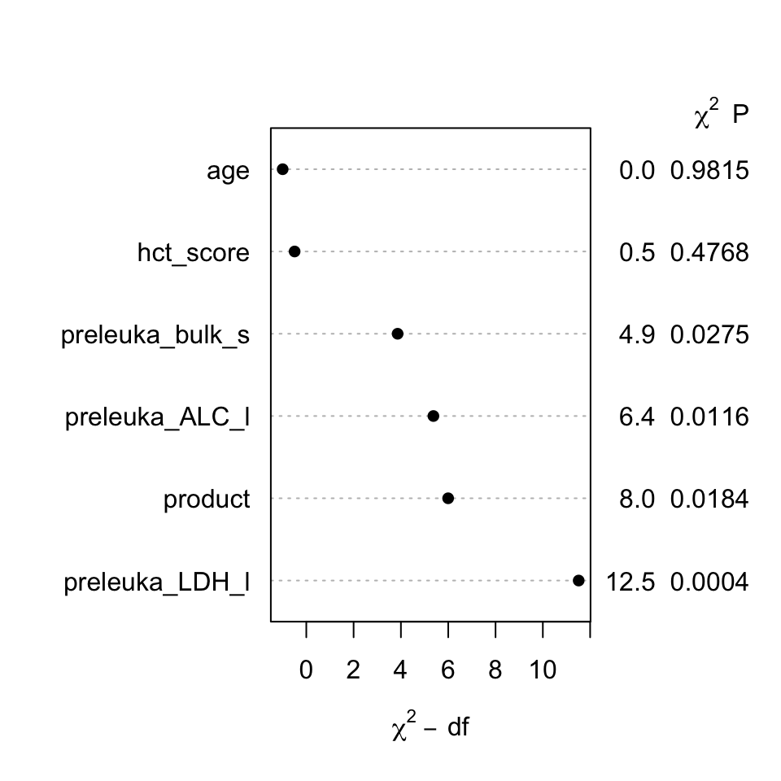

Table 1. Patient and disease characteristics
Show code
df <- read.xlsx("df.xlsx",sheet=1)
pt_char <- c(
"product",
"age",
"sex",
"hct_score",
"prior_tx",
"relapse_pattern",
"preleuka_LDH",
"preleuka_bulk_s",
"preleuka_annarbor",
"preleuka_extranodal",
"preleuka_ALC",
"bridge",
"preLD_LDH",
"lymph_type1"
)
df %>%
select(`CAR T-cell product`=product,
Age=age,
Sex=sex,
`HCT-CI`=hct_score,
`Lymphoma histology`="lymph_type1",
`Number of prior therapies`=prior_tx,
`Relapse pattern`=relapse_pattern,
LDH=preleuka_LDH,
`Largest lesion diameter (cm)`=preleuka_bulk_s,
`Ann Arbor Stage`=preleuka_annarbor,
`Extranodal disease`=preleuka_extranodal,
ALC=preleuka_ALC,
`Bridging therapy post-leukapheresis`=bridge,
) %>%
mutate(`CAR T-cell product`=fct_relevel(`CAR T-cell product`,"axicel","tisacel","jcar014")) %>%
mutate(`CAR T-cell product`=recode_factor(`CAR T-cell product`,`axicel`="axicel",`tisacel`="tisacel",`jcar014`="JCAR014")) %>%
tbl_summary(
by = `CAR T-cell product`,
type = list(all_continuous() ~ "continuous2",
`HCT-CI` ~ 'continuous2',
`Number of prior therapies` ~ 'continuous2'),
statistic = all_continuous() ~ c("{median} ({p25}, {p75})",
"{min}, {max}"),
missing_text = "Missing data") %>%
add_p(simulate.p.value=TRUE) %>%
bold_labels()
| Characteristic | axicel, N = 68 | tisacel, N = 31 | JCAR014, N = 32 | p-value1 |
|---|---|---|---|---|
| Age | 0.068 | |||
| Median (IQR) | 62 (50, 66) | 64 (56, 72) | 60 (53, 63) | |
| Range | 25, 79 | 23, 81 | 27, 71 | |
| Sex | 0.8 | |||
| F | 21 (31%) | 10 (32%) | 12 (38%) | |
| M | 47 (69%) | 21 (68%) | 20 (62%) | |
| HCT-CI | 0.5 | |||
| Median (IQR) | 1.00 (0.00, 3.00) | 1.00 (0.00, 3.00) | 1.00 (0.00, 3.00) | |
| Range | 0.00, 9.00 | 0.00, 6.00 | 0.00, 6.00 | |
| Lymphoma histology | 0.006 | |||
| Aggressive | 57 (84%) | 31 (100%) | 24 (75%) | |
| Transformed indolent | 11 (16%) | 0 (0%) | 8 (25%) | |
| Number of prior therapies | 0.002 | |||
| Median (IQR) | 3.00 (2.00, 4.00) | 3.00 (2.00, 4.00) | 4.00 (3.75, 6.00) | |
| Range | 2.00, 9.00 | 1.00, 9.00 | 2.00, 9.00 | |
| Relapse pattern | 0.3 | |||
| Primary refractory | 13 (19%) | 4 (13%) | 5 (16%) | |
| Relapsed | 33 (49%) | 11 (35%) | 11 (34%) | |
| Secondary refractory | 22 (32%) | 16 (52%) | 16 (50%) | |
| LDH | >0.9 | |||
| Median (IQR) | 231 (168, 379) | 221 (176, 372) | 227 (178, 307) | |
| Range | 105, 2,812 | 145, 549 | 110, 641 | |
| Largest lesion diameter (cm) | 0.8 | |||
| Median (IQR) | 4.60 (2.50, 7.30) | 4.25 (2.50, 6.70) | 4.35 (2.72, 5.42) | |
| Range | 1.10, 13.10 | 1.50, 24.80 | 0.80, 11.10 | |
| Missing data | 9 | 11 | 4 | |
| Ann Arbor Stage | 0.2 | |||
| 1 | 0 (0%) | 3 (12%) | 0 (0%) | |
| 2 | 11 (17%) | 4 (15%) | 3 (9.4%) | |
| 3 | 16 (25%) | 5 (19%) | 8 (25%) | |
| 4 | 38 (58%) | 14 (54%) | 21 (66%) | |
| Missing data | 3 | 5 | 0 | |
| Extranodal disease | 40 (62%) | 21 (75%) | 21 (66%) | 0.5 |
| Missing data | 3 | 3 | 0 | |
| ALC | 0.7 | |||
| Median (IQR) | 0.72 (0.42, 1.10) | 0.64 (0.45, 0.99) | 0.72 (0.52, 1.05) | |
| Range | 0.11, 3.82 | 0.28, 2.69 | 0.27, 3.07 | |
| Bridging therapy post-leukapheresis | 40 (59%) | 22 (71%) | 7 (22%) | <0.001 |
|
1
Kruskal-Wallis rank sum test; Pearson's Chi-squared test; Fisher's exact test
|
||||
Table 2. CRS, ICANS and response after CD19 CAR T-cell therapy
Show code
t2a <- df %>%
mutate(crs_g3=case_when(
crs_g3 == "≥3" ~ 1,
crs_g3 == "<3" ~ 0
)) %>%
select(
`CAR T-cell product` = product,
`Grade ≥1 CRS` = crs_g1_d,
`Grade ≥2 CRS` = crs_g2_d,
`Grade ≥3 CRS` = crs_g3,
`Grade ≥1 ICANS` = nt_g1_d,
`Grade ≥2 ICANS` = nt_g2_d,
`Grade ≥3 ICANS` = nt_g3_d
) %>%
mutate(`CAR T-cell product` = fct_relevel(`CAR T-cell product`, "axicel", "tisacel", "jcar014")) %>%
mutate(
`CAR T-cell product` = recode_factor(
`CAR T-cell product`,
`axicel` = "axicel",
`tisacel` = "tisacel",
`jcar014` = "JCAR014"
)
) %>%
tbl_summary(
by = `CAR T-cell product`,
# type = list(`CRS grade` ~ 'continuous2',
# `ICANS grade` ~ 'continuous2'),
statistic = all_continuous() ~ c("{median} ({p25}, {p75})",
"{min}, {max}"),missing_text = "Missing data" ) %>%
add_p(simulate.p.value = TRUE) %>%
bold_labels()
#### Table 2b response ####
t2b <- df %>%
filter(!is.na(bestresp_b)) %>%
transmute(
`CAR T-cell product`=fct_relevel(product, "axicel", "tisacel", "jcar014"),
`Overall response rate (best response)` = as.numeric(bestresp_b),
`Complete response rate (best response)` = bestCR_b
) %>%
mutate(`CAR T-cell product` = recode_factor(
`CAR T-cell product`,
`axicel` = "axicel",
`tisacel` = "tisacel",
`jcar014` = "JCAR014"
)
) %>%
tbl_summary(
by = `CAR T-cell product`,
# type = list(`CRS grade` ~ 'continuous2',
# `ICANS grade` ~ 'continuous2'),
statistic = all_continuous() ~ c("{median} ({p25}, {p75})",
"{min}, {max}"),missing_text = "Missing data") %>%
add_p(simulate.p.value = TRUE) %>%
bold_labels()
#### Stack table 2a and 2b ####
tbl_stack(
tbls = list(t2a, t2b),group_header = c("Toxicity","Response"))
| Characteristic | axicel, N = 681 | tisacel, N = 311 | JCAR014, N = 321 | p-value2 |
|---|---|---|---|---|
| Toxicity | ||||
| Grade ≥1 CRS | 59 (87%) | 22 (71%) | 16 (50%) | <0.001 |
| Grade ≥2 CRS | 33 (49%) | 9 (29%) | 9 (28%) | 0.064 |
| Grade ≥3 CRS | 5 (7.4%) | 0 (0%) | 0 (0%) | 0.14 |
| Grade ≥1 ICANS | 42 (62%) | 7 (23%) | 11 (34%) | <0.001 |
| Grade ≥2 ICANS | 35 (51%) | 7 (23%) | 6 (19%) | 0.001 |
| Grade ≥3 ICANS | 20 (29%) | 4 (13%) | 3 (9.4%) | 0.033 |
| Response | ||||
| Overall response rate (best response) | 49 (75%) | 18 (58%) | 18 (56%) | 0.091 |
| Complete response rate (best response) | 36 (55%) | 10 (32%) | 13 (41%) | 0.081 |
|
1
n (%)
2
Pearson's Chi-squared test; Fisher's exact test
|
||||
Ordinal logistic regression modeling of outcomes
Impute missing data for multivariable regression modeling
Show code
set.seed(12345)
df$preleuka_LDH_l <- log10(df$preleuka_LDH)
df$preleuka_ALC_l <- log10(df$preleuka_ALC)
df <- df %>%
mutate(product=fct_relevel(product,"axicel","tisacel","jcar014"))
library(rms)
dd <- datadist(df)
options(datadist='dd')
mi <- aregImpute(formula = ~ product+preleuka_LDH_l+age+hct_score+preleuka_bulk_s+preleuka_ALC_l,
data=df, n.impute = 10, burnin=3, nk=3, type='pmm', pmmtype=1)
Iteration 1
Iteration 2
Iteration 3
Iteration 4
Iteration 5
Iteration 6
Iteration 7
Iteration 8
Iteration 9
Iteration 10
Iteration 11
Iteration 12
Iteration 13 Fit univariate model for CRS (Table S2)
Show code
lrm(formula = crs_g_r ~ product, data = df, x = T, y = T)
| Model Likelihood Ratio Test |
Discrimination Indexes |
Rank Discrim. Indexes |
|
|---|---|---|---|
| Obs 131 | LR χ2 12.41 | R2 0.102 | C 0.631 |
| 0 34 | d.f. 2 | g 0.631 | Dxy 0.262 |
| 1 46 | Pr(>χ2) 0.0020 | gr 1.880 | γ 0.408 |
| 2-5 51 | gp 0.123 | τa 0.174 | |
| max |∂log L/∂β| 1×10-11 | Brier 0.171 |
| β | S.E. | Wald Z | Pr(>|Z|) | |
|---|---|---|---|---|
| y≥1 | 1.64 | 0.28 | 5.88 | <0.0001 |
| y≥2-5 | 0.01 | 0.23 | 0.06 | 0.9514 |
| product=tisacel | -0.82 | 0.40 | -2.06 | 0.0398 |
| product=jcar014 | -1.41 | 0.43 | -3.30 | 0.0010 |
Show code
options(prType=NULL)
Fit multivariable model for CRS (Table S3)
Show code
fit_mi <-
fit.mult.impute(
crs_g_r ~ product + preleuka_LDH_l + preleuka_bulk_s + age + hct_score + preleuka_ALC_l,
fitter = lrm,
data = df,
xtrans = mi,
x = T,
y = T
)
Variance Inflation Factors Due to Imputation:
y>=1 y>=2-5 product=tisacel product=jcar014
1.01 1.01 1.00 1.00
preleuka_LDH_l preleuka_bulk_s age hct_score
1.02 1.18 1.00 1.00
preleuka_ALC_l
1.00
Rate of Missing Information:
y>=1 y>=2-5 product=tisacel product=jcar014
0.01 0.01 0.00 0.00
preleuka_LDH_l preleuka_bulk_s age hct_score
0.02 0.15 0.00 0.00
preleuka_ALC_l
0.00
d.f. for t-distribution for Tests of Single Coefficients:
y>=1 y>=2-5 product=tisacel product=jcar014
351727.48 306122.42 2197334.02 1523200.13
preleuka_LDH_l preleuka_bulk_s age hct_score
17454.99 381.41 1833820.99 3543312.27
preleuka_ALC_l
8501870.07
The following fit components were averaged over the 10 model fits:
stats linear.predictors Show code
fit.mult.impute(formula = crs_g_r ~ product + preleuka_LDH_l +
preleuka_bulk_s + age + hct_score + preleuka_ALC_l, fitter = lrm,
xtrans = mi, data = df, x = T, y = T)
| Model Likelihood Ratio Test |
Discrimination Indexes |
Rank Discrim. Indexes |
|
|---|---|---|---|
| Obs 131 | LR χ2 16.27 | R2 0.132 | C 0.667 |
| 0 34 | d.f. 7 | g 0.802 | Dxy 0.333 |
| 1 46 | Pr(>χ2) 0.0232 | gr 2.229 | γ 0.333 |
| 2-5 51 | gp 0.147 | τa 0.221 | |
| max |∂log L/∂β| 3×10-10 | Brier 0.165 |
| β | S.E. | Wald Z | Pr(>|Z|) | |
|---|---|---|---|---|
| y≥1 | 0.93 | 2.07 | 0.45 | 0.6527 |
| y≥2-5 | -0.72 | 2.07 | -0.35 | 0.7263 |
| product=tisacel | -0.74 | 0.41 | -1.80 | 0.0717 |
| product=jcar014 | -1.45 | 0.44 | -3.30 | 0.0010 |
| preleuka_LDH_l | 0.79 | 0.79 | 0.99 | 0.3216 |
| preleuka_bulk_s | -0.04 | 0.06 | -0.62 | 0.5343 |
| age | -0.02 | 0.01 | -1.18 | 0.2391 |
| hct_score | 0.01 | 0.10 | 0.10 | 0.9211 |
| preleuka_ALC_l | 0.53 | 0.57 | 0.93 | 0.3499 |
Show code
options(prType=NULL)
Check multivariable CRS model calibration (bootstrapped smooth calibration curves)
Show code
Logistic Regression Model
fit.mult.impute(formula = crs_g_r ~ product + preleuka_LDH_l +
preleuka_bulk_s + age + hct_score + preleuka_ALC_l, fitter = lrm,
xtrans = mi, data = df, x = T, y = T)
Model Likelihood Discrimination Rank Discrim.
Ratio Test Indexes Indexes
Obs 131 LR chi2 16.27 R2 0.132 C 0.667
0 34 d.f. 7 g 0.802 Dxy 0.333
1 46 Pr(> chi2) 0.0232 gr 2.229 gamma 0.333
2-5 51 gp 0.147 tau-a 0.221
max |deriv| 3e-10 Brier 0.165
Coef S.E. Wald Z Pr(>|Z|)
y>=1 0.9334 2.0740 0.45 0.6527
y>=2-5 -0.7247 2.0703 -0.35 0.7263
product=tisacel -0.7378 0.4097 -1.80 0.0717
product=jcar014 -1.4456 0.4376 -3.30 0.0010
preleuka_LDH_l 0.7859 0.7930 0.99 0.3216
preleuka_bulk_s -0.0353 0.0569 -0.62 0.5343
age -0.0161 0.0137 -1.18 0.2391
hct_score 0.0100 0.1014 0.10 0.9211
preleuka_ALC_l 0.5305 0.5675 0.93 0.3499
Effects Response : crs_g_r
Factor Low High Diff. Effect
preleuka_LDH_l 2.23800 2.56230 0.32425 0.254840
Odds Ratio 2.23800 2.56230 0.32425 1.290300
preleuka_bulk_s 2.50000 7.05000 4.55000 -0.160790
Odds Ratio 2.50000 7.05000 4.55000 0.851470
age 53.00000 67.00000 14.00000 -0.225880
Odds Ratio 53.00000 67.00000 14.00000 0.797810
hct_score 0.00000 3.00000 3.00000 0.030127
Odds Ratio 0.00000 3.00000 3.00000 1.030600
preleuka_ALC_l -0.35666 0.02117 0.37783 0.200460
Odds Ratio -0.35666 0.02117 0.37783 1.222000
product - tisacel:axicel 1.00000 2.00000 NA -0.737750
Odds Ratio 1.00000 2.00000 NA 0.478190
product - jcar014:axicel 1.00000 3.00000 NA -1.445600
Odds Ratio 1.00000 3.00000 NA 0.235610
S.E. Lower 0.95 Upper 0.95
0.25713 -0.249130 0.758810
NA 0.779480 2.135700
0.25873 -0.667890 0.346320
NA 0.512790 1.413900
0.19189 -0.601980 0.150220
NA 0.547720 1.162100
0.30432 -0.566330 0.626580
NA 0.567610 1.871200
0.21442 -0.219800 0.620720
NA 0.802680 1.860300
0.40965 -1.540700 0.065152
NA 0.214240 1.067300
0.43762 -2.303300 -0.587870
NA 0.099926 0.555510
[1] 285.5572
n=131 Mean absolute error=0.013 Mean squared error=0.00023
0.9 Quantile of absolute error=0.023
n=131 Mean absolute error=0.05 Mean squared error=0.00449
0.9 Quantile of absolute error=0.115Build Table 3a. CAR T-cell product type and CRS severity
Show code
#### Sparser function ####
get_model_stats = function(x) {
cap = capture.output(print(x))
#model stats
stats = c()
stats$R2.adj = str_match(cap, "R2 adj\\s+ (\\d\\.\\d+)") %>% na.omit() %>% .[, 2] %>% as.numeric()
#coef stats lines
coef_lines = cap[which(str_detect(cap, "Coef\\s+S\\.E\\.")):(length(cap) - 1)]
#parse
coef_lines_table = suppressWarnings(readr::read_table(coef_lines %>% stringr::str_c(collapse = "\n")))
colnames(coef_lines_table)[1] = "Predictor"
list(
stats = stats,
coefs = coef_lines_table
)
}
#Sparse ORs and 95% CIs from univariate model
crs_d <- data.frame(summary(fit_crs))
crs_unadj <- rbind(
cbind(round(crs_d[2,4],2),paste(round(crs_d[2,6],2),round(crs_d[2,7],2),sep="-")),
cbind(round(crs_d[4,4],2),paste(round(crs_d[4,6],2),round(crs_d[4,7],2),sep="-"))
)
colnames(crs_unadj) <- c("unadjusted OR","95% CI")
rownames(crs_unadj) <- c("Tisacel versus axicel","JCAR014 versus axicel")
htmlTable(crs_unadj)
| unadjusted OR | 95% CI | |
|---|---|---|
| Tisacel versus axicel | 0.44 | 0.2-0.96 |
| JCAR014 versus axicel | 0.25 | 0.11-0.57 |
Show code
#Parse p values from univariate model
crs_unadjstats_d <- get_model_stats(fit_crs)
#Parse p values from multivariable model
crs_adjstats_d <- get_model_stats(fit_mi)
#Parse ORs and 95% CI from multivariable model
d <- data.frame(summary(fit_mi))
crs_adj <- rbind(
cbind(round(d[12,4],2),paste(round(d[12,6],2),round(d[12,7],2),sep = "-")),
cbind(round(d[14,4],2),paste(round(d[14,6],2),round(d[14,7],2),sep = "-"))
)
colnames(crs_adj) <- c("adjusted OR","95% CI")
rownames(crs_adj) <- c("Tisacel versus axicel","JCAR014 versus axicel")
#### CRS model table ####
htmlTable(
cbind(
crs_unadj,
crs_unadjstats_d$coefs[3:4, 5],
crs_adj,
crs_adjstats_d$coefs[3:4, 5]
),
rgroup = "CRS severity (peak grade)",
n.rgroup = 2
)
| unadjusted OR | 95% CI | Pr(>|Z|) | adjusted OR | 95% CI | Pr(>|Z|) | |
|---|---|---|---|---|---|---|
| CRS severity (peak grade) | ||||||
| Tisacel versus axicel | 0.44 | 0.2-0.96 | 0.0398 | 0.48 | 0.21-1.07 | 0.0717 |
| JCAR014 versus axicel | 0.25 | 0.11-0.57 | 0.0010 | 0.24 | 0.1-0.56 | 0.001 |
Show code
### Create object to merge tables later
CRS_t <-
cbind(crs_unadj,
crs_unadjstats_d$coefs[3:4, 5],
crs_adj,
crs_adjstats_d$coefs[3:4, 5])
Fit univariate model for ICANS
Show code
lrm(formula = nt_g_r ~ product, data = df, x = T, y = T)Frequencies of Responses
0 1 2 3-5 71 12 21 27
| Model Likelihood Ratio Test |
Discrimination Indexes |
Rank Discrim. Indexes |
|
|---|---|---|---|
| Obs 131 | LR χ2 15.99 | R2 0.127 | C 0.648 |
| max |∂log L/∂β| 6×10-11 | d.f. 2 | g 0.742 | Dxy 0.296 |
| Pr(>χ2) 0.0003 | gr 2.101 | γ 0.483 | |
| gp 0.159 | τa 0.188 | ||
| Brier 0.209 |
| β | S.E. | Wald Z | Pr(>|Z|) | |
|---|---|---|---|---|
| y≥1 | 0.46 | 0.24 | 1.93 | 0.0538 |
| y≥2 | 0.03 | 0.23 | 0.14 | 0.8859 |
| y≥3-5 | -0.84 | 0.25 | -3.34 | 0.0008 |
| product=tisacel | -1.58 | 0.49 | -3.24 | 0.0012 |
| product=jcar014 | -1.20 | 0.43 | -2.82 | 0.0048 |
Show code
options(prType=NULL)
Fit multivariable model for ICANS
Show code
fit_mi <-
fit.mult.impute(
nt_g_r ~ product + preleuka_LDH_l + preleuka_bulk_s + age + hct_score + preleuka_ALC_l,
fitter = lrm,
data = df,
xtrans = mi,
x=T,
y=T
)
Variance Inflation Factors Due to Imputation:
y>=1 y>=2 y>=3-5 product=tisacel
1.00 1.00 1.00 1.01
product=jcar014 preleuka_LDH_l preleuka_bulk_s age
1.00 1.01 1.22 1.00
hct_score preleuka_ALC_l
1.00 1.00
Rate of Missing Information:
y>=1 y>=2 y>=3-5 product=tisacel
0.00 0.00 0.00 0.01
product=jcar014 preleuka_LDH_l preleuka_bulk_s age
0.00 0.01 0.18 0.00
hct_score preleuka_ALC_l
0.00 0.00
d.f. for t-distribution for Tests of Single Coefficients:
y>=1 y>=2 y>=3-5 product=tisacel
10955020.52 12820497.05 14773089.14 70465.86
product=jcar014 preleuka_LDH_l preleuka_bulk_s age
3852853.25 49963.34 280.05 703883.44
hct_score preleuka_ALC_l
1954570.91 1262853.00
The following fit components were averaged over the 10 model fits:
stats linear.predictors Show code
fit.mult.impute(formula = nt_g_r ~ product + preleuka_LDH_l +
preleuka_bulk_s + age + hct_score + preleuka_ALC_l, fitter = lrm,
xtrans = mi, data = df, x = T, y = T)
Frequencies of Responses
0 1 2 3-5 71 12 21 27
| Model Likelihood Ratio Test |
Discrimination Indexes |
Rank Discrim. Indexes |
|
|---|---|---|---|
| Obs 131 | LR χ2 21.10 | R2 0.165 | C 0.689 |
| max |∂log L/∂β| 4×10-8 | d.f. 7 | g 0.987 | Dxy 0.378 |
| Pr(>χ2) 0.0039 | gr 2.684 | γ 0.378 | |
| gp 0.205 | τa 0.240 | ||
| Brier 0.201 |
| β | S.E. | Wald Z | Pr(>|Z|) | |
|---|---|---|---|---|
| y≥1 | -1.66 | 2.01 | -0.83 | 0.4072 |
| y≥2 | -2.11 | 2.01 | -1.05 | 0.2942 |
| y≥3-5 | -3.01 | 2.02 | -1.49 | 0.1357 |
| product=tisacel | -1.81 | 0.52 | -3.49 | 0.0005 |
| product=jcar014 | -1.31 | 0.44 | -2.97 | 0.0030 |
| preleuka_LDH_l | 0.44 | 0.72 | 0.61 | 0.5419 |
| preleuka_bulk_s | 0.05 | 0.06 | 0.89 | 0.3712 |
| age | 0.02 | 0.01 | 1.21 | 0.2278 |
| hct_score | -0.01 | 0.10 | -0.07 | 0.9468 |
| preleuka_ALC_l | 0.80 | 0.57 | 1.39 | 0.1635 |
Show code
options(prType=NULL)
Check multivariable ICANS model calibration (bootstrapped smooth calibration curves)
Show code
fit_check_ord3 <- function(fit,predictor){
print(fit)
print(summary(fit))
print(AIC(fit))
par(mfrow=c(1,3))
plot(rms::calibrate(fit, kint = 1,B=200,group=df$nt_g_r))
plot(rms::calibrate(fit, kint = 2,B=200,group=df$nt_g_r))
plot(rms::calibrate(fit, kint = 3,B=200,group=df$nt_g_r))
}
fit_check_ord3(fit_mi)
Logistic Regression Model
fit.mult.impute(formula = nt_g_r ~ product + preleuka_LDH_l +
preleuka_bulk_s + age + hct_score + preleuka_ALC_l, fitter = lrm,
xtrans = mi, data = df, x = T, y = T)
Frequencies of Responses
0 1 2 3-5
71 12 21 27
Model Likelihood Discrimination Rank Discrim.
Ratio Test Indexes Indexes
Obs 131 LR chi2 21.10 R2 0.165 C 0.689
max |deriv| 4e-08 d.f. 7 g 0.987 Dxy 0.378
Pr(> chi2) 0.0039 gr 2.684 gamma 0.378
gp 0.205 tau-a 0.240
Brier 0.201
Coef S.E. Wald Z Pr(>|Z|)
y>=1 -1.6639 2.0073 -0.83 0.4072
y>=2 -2.1073 2.0090 -1.05 0.2942
y>=3-5 -3.0143 2.0205 -1.49 0.1357
product=tisacel -1.8086 0.5181 -3.49 0.0005
product=jcar014 -1.3076 0.4405 -2.97 0.0030
preleuka_LDH_l 0.4367 0.7160 0.61 0.5419
preleuka_bulk_s 0.0508 0.0568 0.89 0.3712
age 0.0177 0.0147 1.21 0.2278
hct_score -0.0070 0.1042 -0.07 0.9468
preleuka_ALC_l 0.7965 0.5716 1.39 0.1635
Effects Response : nt_g_r
Factor Low High Diff. Effect
preleuka_LDH_l 2.23800 2.56230 0.32425 0.141600
Odds Ratio 2.23800 2.56230 0.32425 1.152100
preleuka_bulk_s 2.50000 7.05000 4.55000 0.230940
Odds Ratio 2.50000 7.05000 4.55000 1.259800
age 53.00000 67.00000 14.00000 0.247390
Odds Ratio 53.00000 67.00000 14.00000 1.280700
hct_score 0.00000 3.00000 3.00000 -0.020862
Odds Ratio 0.00000 3.00000 3.00000 0.979350
preleuka_ALC_l -0.35666 0.02117 0.37783 0.300950
Odds Ratio -0.35666 0.02117 0.37783 1.351100
product - tisacel:axicel 1.00000 2.00000 NA -1.808600
Odds Ratio 1.00000 2.00000 NA 0.163880
product - jcar014:axicel 1.00000 3.00000 NA -1.307600
Odds Ratio 1.00000 3.00000 NA 0.270460
S.E. Lower 0.95 Upper 0.95
0.23216 -0.313420 0.59663
NA 0.730940 1.81600
0.25826 -0.275240 0.73712
NA 0.759390 2.08990
0.20511 -0.154610 0.64940
NA 0.856750 1.91440
0.31260 -0.633550 0.59182
NA 0.530710 1.80730
0.21597 -0.122350 0.72425
NA 0.884840 2.06320
0.51815 -2.824200 -0.79307
NA 0.059358 0.45245
0.44045 -2.170900 -0.44434
NA 0.114080 0.64125
[1] 306.3305
n=131 Mean absolute error=0.034 Mean squared error=0.00188
0.9 Quantile of absolute error=0.078
n=131 Mean absolute error=0.034 Mean squared error=0.00241
0.9 Quantile of absolute error=0.072
n=131 Mean absolute error=0.047 Mean squared error=0.0034
0.9 Quantile of absolute error=0.083Build Table 3b. CAR T-cell product type and ICANS severity
Show code
d <- summary(fit_nt)
d <- data.frame(d)
#Parse ORs and 95%CI from univariate model
nt_unadj <- rbind(
cbind(round(d[2,4],2),paste(round(d[2,6],2),round(d[2,7],2),sep="-")),
cbind(round(d[4,4],2),paste(round(d[4,6],2),round(d[4,7],2),sep="-"))
)
colnames(nt_unadj) <- c("unadjusted OR","95% CI")
rownames(nt_unadj) <- c("Tisacel versus axicel","JCAR014 versus axicel")
htmlTable(nt_unadj)
| unadjusted OR | 95% CI | |
|---|---|---|
| Tisacel versus axicel | 0.21 | 0.08-0.53 |
| JCAR014 versus axicel | 0.3 | 0.13-0.69 |
Show code
#Parse p values from univariate model
unadjstats_d <- get_model_stats(fit_nt)
unadjstats_d$coefs[4:5,5]
# A tibble: 2 x 1
`Pr(>|Z|)`
<dbl>
1 0.0012
2 0.0048Show code
#Parse p values from multivariable model
adjstats_d <- get_model_stats(fit_mi)
adjstats_d$coefs[4:5,5]
# A tibble: 2 x 1
`Pr(>|Z|)`
<dbl>
1 0.0005
2 0.003 Show code
#Parse ORs and 95% CI from multivariable model
d <- data.frame(summary(fit_mi))
nt_adj <- rbind(
cbind(round(d[12,4],2),paste(round(d[12,6],2),round(d[12,7],2),sep="-")),
cbind(round(d[14,4],2),paste(round(d[14,6],2),round(d[14,7],2),sep="-"))
)
colnames(nt_adj) <- c("adjusted OR","95% CI")
rownames(nt_adj) <- c("Tisacel versus axicel","JCAR014 versus axicel")
htmlTable(cbind(
nt_unadj,
round(unadjstats_d$coefs[4:5, 5], 4),
nt_adj,
round(adjstats_d$coefs[4:5, 5], 4)
),
rgroup = "ICANS severity (peak grade)",
n.rgroup = 2)
| unadjusted OR | 95% CI | Pr(>|Z|) | adjusted OR | 95% CI | Pr(>|Z|) | |
|---|---|---|---|---|---|---|
| ICANS severity (peak grade) | ||||||
| Tisacel versus axicel | 0.21 | 0.08-0.53 | 0.0012 | 0.16 | 0.06-0.45 | 5e-04 |
| JCAR014 versus axicel | 0.3 | 0.13-0.69 | 0.0048 | 0.27 | 0.11-0.64 | 0.003 |
Fit univariate model for CR (best response)
Show code
lrm(formula = bestCR_b ~ product, data = df, x = T, y = T)Frequencies of Missing Values Due to Each Variable
bestCR_b product
3 0
| Model Likelihood Ratio Test |
Discrimination Indexes |
Rank Discrim. Indexes |
|
|---|---|---|---|
| Obs 128 | LR χ2 5.09 | R2 0.052 | C 0.605 |
| 0 69 | d.f. 2 | g 0.434 | Dxy 0.210 |
| 1 59 | Pr(>χ2) 0.0783 | gr 1.544 | γ 0.333 |
| max |∂log L/∂β| 2×10-8 | gp 0.105 | τa 0.105 | |
| Brier 0.239 |
| β | S.E. | Wald Z | Pr(>|Z|) | |
|---|---|---|---|---|
| Intercept | 0.22 | 0.25 | 0.87 | 0.3862 |
| product=tisacel | -0.96 | 0.46 | -2.09 | 0.0365 |
| product=jcar014 | -0.60 | 0.44 | -1.36 | 0.1738 |
Show code
options(prType=NULL)
Fit multivariable model for CR (best response)
Show code
fit_mi <-
fit.mult.impute(
bestCR_b ~ product + preleuka_LDH_l + preleuka_bulk_s + age + hct_score + preleuka_ALC_l,
fitter = lrm,
data = df,
xtrans = mi,
x=T,
y=T
)
Variance Inflation Factors Due to Imputation:
Intercept product=tisacel product=jcar014 preleuka_LDH_l
1.02 1.04 1.02 1.02
preleuka_bulk_s age hct_score preleuka_ALC_l
1.32 1.04 1.02 1.03
Rate of Missing Information:
Intercept product=tisacel product=jcar014 preleuka_LDH_l
0.02 0.04 0.02 0.02
preleuka_bulk_s age hct_score preleuka_ALC_l
0.24 0.04 0.02 0.03
d.f. for t-distribution for Tests of Single Coefficients:
Intercept product=tisacel product=jcar014 preleuka_LDH_l
25120.67 5141.68 28618.42 23466.24
preleuka_bulk_s age hct_score preleuka_ALC_l
155.55 6555.85 25324.23 12438.55
The following fit components were averaged over the 10 model fits:
stats linear.predictors Show code
fit.mult.impute(formula = bestCR_b ~ product + preleuka_LDH_l +
preleuka_bulk_s + age + hct_score + preleuka_ALC_l, fitter = lrm,
xtrans = mi, data = df, x = T, y = T)
Frequencies of Missing Values Due to Each Variable
bestCR_b product preleuka_LDH_l preleuka_bulk_s
3 0 0 0
age hct_score preleuka_ALC_l
0 0 0
| Model Likelihood Ratio Test |
Discrimination Indexes |
Rank Discrim. Indexes |
|
|---|---|---|---|
| Obs 128 | LR χ2 44.16 | R2 0.390 | C 0.820 |
| 0 69 | d.f. 7 | g 1.832 | Dxy 0.640 |
| 1 59 | Pr(>χ2) <0.0001 | gr 6.271 | γ 0.640 |
| max |∂log L/∂β| 2×10-7 | gp 0.318 | τa 0.321 | |
| Brier 0.172 |
| β | S.E. | Wald Z | Pr(>|Z|) | |
|---|---|---|---|---|
| Intercept | 9.30 | 2.98 | 3.12 | 0.0018 |
| product=tisacel | -1.43 | 0.56 | -2.54 | 0.0112 |
| product=jcar014 | -1.17 | 0.53 | -2.20 | 0.0277 |
| preleuka_LDH_l | -3.33 | 1.14 | -2.93 | 0.0034 |
| preleuka_bulk_s | -0.23 | 0.10 | -2.30 | 0.0216 |
| age | 0.01 | 0.02 | 0.59 | 0.5528 |
| hct_score | 0.02 | 0.13 | 0.16 | 0.8729 |
| preleuka_ALC_l | 2.42 | 0.82 | 2.97 | 0.0030 |
Show code
options(prType=NULL)
Check CR model calibration (bootstrapped smooth calibration curves)

n=128 Mean absolute error=0.059 Mean squared error=0.00522
0.9 Quantile of absolute error=0.127Build Table 3c. CAR T-cell product type and CR (best response)
'summary.rms' num [1:4, 1:8] 1 1 1 1 2 2 3 3 NA NA ...
- attr(*, "dimnames")=List of 2
..$ : chr [1:4] "product - tisacel:axicel" " Odds Ratio" "product - jcar014:axicel" " Odds Ratio"
..$ : chr [1:8] "Low" "High" "Diff." "Effect" ...
- attr(*, "heading")= chr " Effects Response : bestCR_b"
- attr(*, "scale")= chr [1:2] "log odds" "Odds Ratio"
- attr(*, "obj.name")= chr "fit_resp"
- attr(*, "adjust")= chr ""
- attr(*, "conf.type")= chr "z"Show code
d <- data.frame(d)
resp_unadj <- rbind(
cbind(round(d[2,4],2),paste(round(d[2,6],2),round(d[2,7],2),sep="-")),
cbind(round(d[4,4],2),paste(round(d[4,6],2),round(d[4,7],2),sep="-"))
)
colnames(resp_unadj) <- c("unadjusted OR","95% CI")
rownames(resp_unadj) <- c("Tisacel versus axicel","JCAR014 versus axicel")
htmlTable(resp_unadj)
| unadjusted OR | 95% CI | |
|---|---|---|
| Tisacel versus axicel | 0.38 | 0.16-0.94 |
| JCAR014 versus axicel | 0.55 | 0.23-1.3 |
Show code
#Parse p values from univariate model
unadjstats_d <- get_model_stats(fit_resp)
unadjstats_d$coefs[2:3,5]
# A tibble: 2 x 1
`Pr(>|Z|)`
<dbl>
1 0.0365
2 0.174 Show code
#Parse p values from multivariable model
adjstats_d <- get_model_stats(fit_mi)
adjstats_d$coefs[2:3,5]
# A tibble: 2 x 1
`Pr(>|Z|)`
<dbl>
1 0.0112
2 0.0277Show code
#Parse ORs and 95% CI from multivariable model
d <- data.frame(summary(fit_mi))
resp_adj <- rbind(
cbind(round(d[12,4],2),paste(round(d[12,6],2),round(d[12,7],2),sep="-")),
cbind(round(d[14,4],2),paste(round(d[14,6],2),round(d[14,7],2),sep="-"))
)
colnames(resp_adj) <- c("adjusted OR","95% CI")
rownames(resp_adj) <- c("Tisacel versus axicel","JCAR014 versus axicel")
htmlTable(resp_adj)
| adjusted OR | 95% CI | |
|---|---|---|
| Tisacel versus axicel | 0.24 | 0.08-0.72 |
| JCAR014 versus axicel | 0.31 | 0.11-0.88 |
Show code
| unadjusted OR | 95% CI | Pr(>|Z|) | adjusted OR | 95% CI | Pr(>|Z|) | |
|---|---|---|---|---|---|---|
| Tisacel versus axicel | 0.38 | 0.16-0.94 | 0.0365 | 0.24 | 0.08-0.72 | 0.011 |
| JCAR014 versus axicel | 0.55 | 0.23-1.3 | 0.1738 | 0.31 | 0.11-0.88 | 0.028 |
Show code
#Create object to merge later
CR_t <- cbind(resp_unadj,unadjstats_d$coefs[2:3,5],resp_adj,adjstats_d$coefs[2:3,5])
Table 3 (merge Table 3a, 3b, 3c)
Show code
rbind(CRS_t, NT_t, CR_t) %>%
addHtmlTableStyle(pos.caption = "bottom") %>%
htmlTable(
rgroup = c("CRS grade*", "ICANS grade*", "CR (Best Response)^"),
n.rgroup = c(2, 2, 2),
caption = "*From a multivariable proportional odds logistic regression model or ^logistic regression model including the following variables: CAR T-cell product type, preleukapheresis LDH, preleukapheresis largest lesion diameter, age, HCT-CI, preleukapheresis ALC. P values per the Wald test."
)
| unadjusted OR | 95% CI | Pr(>|Z|) | adjusted OR | 95% CI | Pr(>|Z|) | |
|---|---|---|---|---|---|---|
| CRS grade* | ||||||
| Tisacel versus axicel | 0.44 | 0.2-0.96 | 0.0398 | 0.48 | 0.21-1.07 | 0.0717 |
| JCAR014 versus axicel | 0.25 | 0.11-0.57 | 0.0010 | 0.24 | 0.1-0.56 | 0.001 |
| ICANS grade* | ||||||
| Tisacel versus axicel1 | 0.21 | 0.08-0.53 | 0.0012 | 0.16 | 0.06-0.45 | 5e-04 |
| JCAR014 versus axicel1 | 0.3 | 0.13-0.69 | 0.0048 | 0.27 | 0.11-0.64 | 0.003 |
| CR (Best Response)^ | ||||||
| Tisacel versus axicel2 | 0.38 | 0.16-0.94 | 0.0365 | 0.24 | 0.08-0.72 | 0.0112 |
| JCAR014 versus axicel2 | 0.55 | 0.23-1.3 | 0.1738 | 0.31 | 0.11-0.88 | 0.0277 |
| *From a multivariable proportional odds logistic regression model or ^logistic regression model including the following variables: CAR T-cell product type, preleukapheresis LDH, preleukapheresis largest lesion diameter, age, HCT-CI, preleukapheresis ALC. P values per the Wald test. | ||||||
Analyses of CAR T-cell product effect modifiers for CRS severity (Table S9)
Show code
#Merge tisacel and JCAR014
df <- df %>%
mutate(product_s=ifelse(product=="axicel","axicel","tisacel/JCAR014"))
dd <- datadist(df)
options(datadist='dd')
#### CRS prediction with interaction terms
fit_mi <-
fit.mult.impute(
crs_g_r ~ product_s*preleuka_LDH_l + product_s*preleuka_bulk_s + product_s*age + product_s*hct_score + product_s*preleuka_ALC_l,
fitter = lrm,
data = df,
xtrans = mi,
x=T,
y=T
)
Variance Inflation Factors Due to Imputation:
y>=1
1.00
y>=2-5
1.00
product_s=tisacel/JCAR014
1.02
preleuka_LDH_l
1.04
preleuka_bulk_s
1.28
age
1.02
hct_score
1.02
preleuka_ALC_l
1.01
product_s=tisacel/JCAR014 * preleuka_LDH_l
1.08
product_s=tisacel/JCAR014 * preleuka_bulk_s
1.70
product_s=tisacel/JCAR014 * age
1.01
product_s=tisacel/JCAR014 * hct_score
1.01
product_s=tisacel/JCAR014 * preleuka_ALC_l
1.00
Rate of Missing Information:
y>=1
0.00
y>=2-5
0.00
product_s=tisacel/JCAR014
0.02
preleuka_LDH_l
0.04
preleuka_bulk_s
0.22
age
0.02
hct_score
0.02
preleuka_ALC_l
0.01
product_s=tisacel/JCAR014 * preleuka_LDH_l
0.08
product_s=tisacel/JCAR014 * preleuka_bulk_s
0.41
product_s=tisacel/JCAR014 * age
0.01
product_s=tisacel/JCAR014 * hct_score
0.01
product_s=tisacel/JCAR014 * preleuka_ALC_l
0.00
d.f. for t-distribution for Tests of Single Coefficients:
y>=1
85200193.24
y>=2-5
62614364.54
product_s=tisacel/JCAR014
18412.79
preleuka_LDH_l
6185.04
preleuka_bulk_s
188.27
age
25379.62
hct_score
26061.80
preleuka_ALC_l
272224.87
product_s=tisacel/JCAR014 * preleuka_LDH_l
1489.97
product_s=tisacel/JCAR014 * preleuka_bulk_s
53.52
product_s=tisacel/JCAR014 * age
110728.63
product_s=tisacel/JCAR014 * hct_score
58940.42
product_s=tisacel/JCAR014 * preleuka_ALC_l
1068960.71
The following fit components were averaged over the 10 model fits:
stats linear.predictors Show code
fit.mult.impute(formula = crs_g_r ~ product_s * preleuka_LDH_l +
product_s * preleuka_bulk_s + product_s * age + product_s *
hct_score + product_s * preleuka_ALC_l, fitter = lrm, xtrans = mi,
data = df, x = T, y = T)
| Model Likelihood Ratio Test |
Discrimination Indexes |
Rank Discrim. Indexes |
|
|---|---|---|---|
| Obs 131 | LR χ2 17.68 | R2 0.143 | C 0.678 |
| 0 34 | d.f. 11 | g 0.829 | Dxy 0.357 |
| 1 46 | Pr(>χ2) 0.0915 | gr 2.291 | γ 0.357 |
| 2-5 51 | gp 0.148 | τa 0.237 | |
| max |∂log L/∂β| 1×10-9 | Brier 0.170 |
| β | S.E. | Wald Z | Pr(>|Z|) | |
|---|---|---|---|---|
| y≥1 | -1.02 | 2.73 | -0.37 | 0.7084 |
| y≥2-5 | -2.69 | 2.73 | -0.99 | 0.3246 |
| product_s=tisacel/JCAR014 | 4.40 | 4.60 | 0.96 | 0.3380 |
| preleuka_LDH_l | 1.40 | 0.98 | 1.42 | 0.1555 |
| preleuka_bulk_s | -0.02 | 0.09 | -0.23 | 0.8158 |
| age | -0.01 | 0.02 | -0.31 | 0.7551 |
| hct_score | -0.07 | 0.13 | -0.56 | 0.5763 |
| preleuka_ALC_l | 0.46 | 0.71 | 0.64 | 0.5192 |
| product_s=tisacel/JCAR014 × preleuka_LDH_l | -2.25 | 1.90 | -1.19 | 0.2360 |
| product_s=tisacel/JCAR014 × preleuka_bulk_s | -0.01 | 0.14 | -0.06 | 0.9553 |
| product_s=tisacel/JCAR014 × age | -0.01 | 0.03 | -0.33 | 0.7420 |
| product_s=tisacel/JCAR014 × hct_score | 0.28 | 0.21 | 1.35 | 0.1778 |
| product_s=tisacel/JCAR014 × preleuka_ALC_l | -0.20 | 1.18 | -0.17 | 0.8671 |
Wald Statistics for crs_g_r | |||
| χ2 | d.f. | P | |
|---|---|---|---|
| product_s (Factor+Higher Order Factors) | 12.31 | 6 | 0.0553 |
| All Interactions | 2.95 | 5 | 0.7081 |
| preleuka_LDH_l (Factor+Higher Order Factors) | 2.26 | 2 | 0.3226 |
| All Interactions | 1.40 | 1 | 0.2360 |
| preleuka_bulk_s (Factor+Higher Order Factors) | 0.19 | 2 | 0.9078 |
| All Interactions | 0.00 | 1 | 0.9553 |
| age (Factor+Higher Order Factors) | 0.70 | 2 | 0.7030 |
| All Interactions | 0.11 | 1 | 0.7420 |
| hct_score (Factor+Higher Order Factors) | 1.98 | 2 | 0.3723 |
| All Interactions | 1.82 | 1 | 0.1778 |
| preleuka_ALC_l (Factor+Higher Order Factors) | 0.49 | 2 | 0.7817 |
| All Interactions | 0.03 | 1 | 0.8671 |
| product_s × preleuka_LDH_l (Factor+Higher Order Factors) | 1.40 | 1 | 0.2360 |
| product_s × preleuka_bulk_s (Factor+Higher Order Factors) | 0.00 | 1 | 0.9553 |
| product_s × age (Factor+Higher Order Factors) | 0.11 | 1 | 0.7420 |
| product_s × hct_score (Factor+Higher Order Factors) | 1.82 | 1 | 0.1778 |
| product_s × preleuka_ALC_l (Factor+Higher Order Factors) | 0.03 | 1 | 0.8671 |
| TOTAL INTERACTION | 2.95 | 5 | 0.7081 |
| TOTAL | 15.44 | 11 | 0.1631 |

Recheck calibration of CRS model including interaction terms
Show code
fit_check_ord2(fit_mi)
[1] 290.7757
n=131 Mean absolute error=0.039 Mean squared error=0.00308
0.9 Quantile of absolute error=0.088
n=131 Mean absolute error=0.042 Mean squared error=0.00324
0.9 Quantile of absolute error=0.111Analyses of CAR T-cell product effect modifiers for ICANS severity (Table S10)
Show code
fit_mi <-
fit.mult.impute(
nt_g_r ~ product_s*preleuka_LDH_l + product_s*preleuka_bulk_s + product_s*age + product_s*hct_score + product_s*preleuka_ALC_l,
fitter = lrm,
data = df,
xtrans = mi,
x=TRUE,y=TRUE
)
Variance Inflation Factors Due to Imputation:
y>=1
1.00
y>=2
1.00
y>=3-5
1.00
product_s=tisacel/JCAR014
1.01
preleuka_LDH_l
1.02
preleuka_bulk_s
1.13
age
1.01
hct_score
1.01
preleuka_ALC_l
1.01
product_s=tisacel/JCAR014 * preleuka_LDH_l
1.03
product_s=tisacel/JCAR014 * preleuka_bulk_s
1.19
product_s=tisacel/JCAR014 * age
1.02
product_s=tisacel/JCAR014 * hct_score
1.01
product_s=tisacel/JCAR014 * preleuka_ALC_l
1.01
Rate of Missing Information:
y>=1
0.00
y>=2
0.00
y>=3-5
0.00
product_s=tisacel/JCAR014
0.01
preleuka_LDH_l
0.02
preleuka_bulk_s
0.11
age
0.01
hct_score
0.01
preleuka_ALC_l
0.01
product_s=tisacel/JCAR014 * preleuka_LDH_l
0.03
product_s=tisacel/JCAR014 * preleuka_bulk_s
0.16
product_s=tisacel/JCAR014 * age
0.01
product_s=tisacel/JCAR014 * hct_score
0.01
product_s=tisacel/JCAR014 * preleuka_ALC_l
0.01
d.f. for t-distribution for Tests of Single Coefficients:
y>=1
546379016.76
y>=2
305924665.61
y>=3-5
187154490.06
product_s=tisacel/JCAR014
44899.74
preleuka_LDH_l
26926.72
preleuka_bulk_s
710.42
age
142152.89
hct_score
76671.82
preleuka_ALC_l
227372.55
product_s=tisacel/JCAR014 * preleuka_LDH_l
8693.59
product_s=tisacel/JCAR014 * preleuka_bulk_s
364.67
product_s=tisacel/JCAR014 * age
40131.81
product_s=tisacel/JCAR014 * hct_score
154940.43
product_s=tisacel/JCAR014 * preleuka_ALC_l
44412.16
The following fit components were averaged over the 10 model fits:
stats linear.predictors Show code
fit.mult.impute(formula = nt_g_r ~ product_s * preleuka_LDH_l +
product_s * preleuka_bulk_s + product_s * age + product_s *
hct_score + product_s * preleuka_ALC_l, fitter = lrm, xtrans = mi,
data = df, x = TRUE, y = TRUE)
Frequencies of Responses
0 1 2 3-5 71 12 21 27
| Model Likelihood Ratio Test |
Discrimination Indexes |
Rank Discrim. Indexes |
|
|---|---|---|---|
| Obs 131 | LR χ2 28.47 | R2 0.216 | C 0.721 |
| max |∂log L/∂β| 1×10-6 | d.f. 11 | g 1.132 | Dxy 0.441 |
| Pr(>χ2) 0.0033 | gr 3.104 | γ 0.441 | |
| gp 0.232 | τa 0.280 | ||
| Brier 0.188 |
| β | S.E. | Wald Z | Pr(>|Z|) | |
|---|---|---|---|---|
| y≥1 | -4.60 | 2.63 | -1.75 | 0.0807 |
| y≥2 | -5.07 | 2.64 | -1.92 | 0.0546 |
| y≥3-5 | -6.02 | 2.66 | -2.26 | 0.0235 |
| product_s=tisacel/JCAR014 | 8.83 | 4.98 | 1.77 | 0.0760 |
| preleuka_LDH_l | 1.48 | 0.86 | 1.71 | 0.0867 |
| preleuka_bulk_s | -0.04 | 0.09 | -0.43 | 0.6701 |
| age | 0.03 | 0.02 | 1.72 | 0.0848 |
| hct_score | -0.06 | 0.13 | -0.43 | 0.6706 |
| preleuka_ALC_l | 0.94 | 0.69 | 1.36 | 0.1735 |
| product_s=tisacel/JCAR014 × preleuka_LDH_l | -3.69 | 2.07 | -1.78 | 0.0755 |
| product_s=tisacel/JCAR014 × preleuka_bulk_s | 0.17 | 0.12 | 1.49 | 0.1367 |
| product_s=tisacel/JCAR014 × age | -0.05 | 0.03 | -1.53 | 0.1260 |
| product_s=tisacel/JCAR014 × hct_score | 0.12 | 0.23 | 0.50 | 0.6191 |
| product_s=tisacel/JCAR014 × preleuka_ALC_l | -0.46 | 1.30 | -0.36 | 0.7214 |
Show code
# options(prType=NULL)
#Sparse OR for age per 10-year increment
# summary(fit_mi,age=c(20,30),product_s="axicel")
# summary(fit_mi,age=c(20,30),product_s="tisacel/jcar014")
#
# #Sparse OR for LDH per 100 U/L increment
# summary(fit_mi,preleuka_LDH_l=c(2,3),product_s="axicel")
# summary(fit_mi,preleuka_LDH_l=c(2,3),product_s="tisacel/jcar014")
Recheck calibration of ICANS model including interaction terms
Show code
fit_check_ord3(fit_mi)
[1] 304.1524
n=131 Mean absolute error=0.042 Mean squared error=0.00202
0.9 Quantile of absolute error=0.067
n=131 Mean absolute error=0.034 Mean squared error=0.00123
0.9 Quantile of absolute error=0.044
n=131 Mean absolute error=0.042 Mean squared error=0.00218
0.9 Quantile of absolute error=0.075Figure 3a. ICANS severity risk as a function of age and CAR T-cell product type
Show code
a <- data.frame(Predict(fit_mi,age,product_s,fun = plogis,
kint = 1))
b <- data.frame(Predict(fit_mi,age,product_s,fun = plogis,
kint = 2))
c <- data.frame(Predict(fit_mi,age,product_s,fun = plogis,
kint = 3))
# cairo_ps("Manuscript/Fig3.eps", width = 8, height = 4)
a %>%
full_join(b, by = c("age","product_s")) %>%
full_join(c, by = c("age","product_s")) %>%
pivot_longer(
col = c(yhat.x, yhat.y, yhat),
names_to = "prob_type",
values_to = "prob"
) %>%
mutate(prob_type=fct_relevel(prob_type,"yhat.x","yhat.y","yhat")) %>%
ggplot()+
geom_line(aes(x=age,y=prob,col=prob_type)) +
geom_ribbon(aes(x=age,ymin=lower.x, ymax=upper.x),fill="green",alpha=0.10)+
geom_ribbon(aes(x=age,ymin=lower.y, ymax=upper.y),fill="blue",alpha=0.10)+
geom_ribbon(aes(x=age,ymin=lower, ymax=upper),fill="red",alpha=0.10)+
scale_color_manual(labels = c("≥ Grade 1 ICANS","≥ Grade 2 ICANS","≥ Grade 3 ICANS"),values=c("green","blue","red"))+
scale_x_continuous(name="Age")+
scale_y_continuous(name = "Probability")+
facet_wrap(~product_s)+
theme_bw()+
theme(legend.title = element_blank(),title = element_text(size = 14,face='bold'))+
ggtitle("Figure 3.")
Show code
#Create object to merge later
p3a <- a %>%
full_join(b, by = c("age","product_s")) %>%
full_join(c, by = c("age","product_s")) %>%
pivot_longer(
col = c(yhat.x, yhat.y, yhat),
names_to = "prob_type",
values_to = "prob"
) %>%
mutate(prob_type=fct_relevel(prob_type,"yhat.x","yhat.y","yhat")) %>%
ggplot()+
geom_line(aes(x=age,y=prob,col=prob_type)) +
geom_ribbon(aes(x=age,ymin=lower.x, ymax=upper.x),fill="green",alpha=0.10)+
geom_ribbon(aes(x=age,ymin=lower.y, ymax=upper.y),fill="blue",alpha=0.10)+
geom_ribbon(aes(x=age,ymin=lower, ymax=upper),fill="red",alpha=0.10)+
scale_color_manual(labels = c("≥ Grade 1 ICANS","≥ Grade 2 ICANS","≥ Grade 3 ICANS"),values=c("green","blue","red"))+
scale_x_continuous(name="Age")+
scale_y_continuous(name = "Probability of ICANS")+
facet_wrap(~product_s)+
theme_bw()+
theme(legend.title = element_blank(),title = element_text(size = 12,face='bold'))
Figure 3b. ICANS severity risk as a function of preleukapheresis LDH and CAR T-cell product type
Show code
a <- data.frame(Predict(fit_mi,preleuka_LDH_l,product_s,fun = plogis,
kint = 1))
b <- data.frame(Predict(fit_mi,preleuka_LDH_l,product_s,fun = plogis,
kint = 2))
c <- data.frame(Predict(fit_mi,preleuka_LDH_l,product_s,fun = plogis,
kint = 3))
# cairo_ps("Manuscript/Fig3.eps", width = 8, height = 4)
ldh_breaks <- round(c(10^2.1,10^2.3,10^2.5,10^2.7,10^2.9),0)
p3b <- a %>%
full_join(b, by = c("preleuka_LDH_l","product_s")) %>%
full_join(c, by = c("preleuka_LDH_l","product_s")) %>%
pivot_longer(
col = c(yhat.x, yhat.y, yhat),
names_to = "prob_type",
values_to = "prob"
) %>%
mutate(prob_type=fct_relevel(prob_type,"yhat.x","yhat.y","yhat")) %>%
ggplot()+
geom_line(aes(x=preleuka_LDH_l,y=prob,col=prob_type)) +
geom_ribbon(aes(x=preleuka_LDH_l,ymin=lower.x, ymax=upper.x),fill="green",alpha=0.10)+
geom_ribbon(aes(x=preleuka_LDH_l,ymin=lower.y, ymax=upper.y),fill="blue",alpha=0.10)+
geom_ribbon(aes(x=preleuka_LDH_l,ymin=lower, ymax=upper),fill="red",alpha=0.10)+
scale_color_manual(labels = c("≥ Grade 1 ICANS","≥ Grade 2 ICANS","≥ Grade 3 ICANS"),values=c("green","blue","red"))+
scale_x_continuous(name="Preleukapheresis LDH (U/L)",labels = ldh_breaks)+
scale_y_continuous(name = "Probability of ICANS")+
facet_wrap(~product_s)+
theme_bw() +
theme(legend.title = element_blank(),title = element_text(size = 12,face='bold'))
Merge Figures 3a and 3b
Show code
library(patchwork)
p3a / p3b + plot_annotation(
title = 'Figure 3.',
tag_levels = "A",
theme = theme(plot.title = element_text(size = 16,face='bold'))
)

Analyses of CAR T-cell product effect modifiers for CR (best response)
Show code
#### CR prediction with interaction terms ####
fit_mi <-
fit.mult.impute(
bestCR_b ~ product_s * preleuka_ALC_l + product_s * preleuka_bulk_s + product_s *
age + product_s * hct_score + product_s * preleuka_LDH_l,
fitter = lrm,
data = df,
xtrans = mi,
x=T,y=T
)
Variance Inflation Factors Due to Imputation:
Intercept
1.07
product_s=tisacel/JCAR014
1.05
preleuka_ALC_l
1.10
preleuka_bulk_s
1.75
age
1.04
hct_score
1.07
preleuka_LDH_l
1.04
product_s=tisacel/JCAR014 * preleuka_ALC_l
1.07
product_s=tisacel/JCAR014 * preleuka_bulk_s
1.67
product_s=tisacel/JCAR014 * age
1.03
product_s=tisacel/JCAR014 * hct_score
1.05
product_s=tisacel/JCAR014 * preleuka_LDH_l
1.02
Rate of Missing Information:
Intercept
0.07
product_s=tisacel/JCAR014
0.05
preleuka_ALC_l
0.09
preleuka_bulk_s
0.43
age
0.04
hct_score
0.07
preleuka_LDH_l
0.04
product_s=tisacel/JCAR014 * preleuka_ALC_l
0.07
product_s=tisacel/JCAR014 * preleuka_bulk_s
0.40
product_s=tisacel/JCAR014 * age
0.03
product_s=tisacel/JCAR014 * hct_score
0.05
product_s=tisacel/JCAR014 * preleuka_LDH_l
0.02
d.f. for t-distribution for Tests of Single Coefficients:
Intercept
1904.77
product_s=tisacel/JCAR014
4192.38
preleuka_ALC_l
1090.24
preleuka_bulk_s
49.34
age
6494.77
hct_score
1983.09
preleuka_LDH_l
6324.38
product_s=tisacel/JCAR014 * preleuka_ALC_l
1857.63
product_s=tisacel/JCAR014 * preleuka_bulk_s
56.19
product_s=tisacel/JCAR014 * age
10878.10
product_s=tisacel/JCAR014 * hct_score
3384.37
product_s=tisacel/JCAR014 * preleuka_LDH_l
27254.48
The following fit components were averaged over the 10 model fits:
stats linear.predictors Show code
fit.mult.impute(formula = bestCR_b ~ product_s * preleuka_ALC_l +
product_s * preleuka_bulk_s + product_s * age + product_s *
hct_score + product_s * preleuka_LDH_l, fitter = lrm, xtrans = mi,
data = df, x = T, y = T)
Frequencies of Missing Values Due to Each Variable
bestCR_b product_s preleuka_ALC_l preleuka_bulk_s
3 0 0 0
age hct_score preleuka_LDH_l
0 0 0
| Model Likelihood Ratio Test |
Discrimination Indexes |
Rank Discrim. Indexes |
|
|---|---|---|---|
| Obs 128 | LR χ2 55.30 | R2 0.468 | C 0.841 |
| 0 69 | d.f. 11 | g 2.427 | Dxy 0.682 |
| 1 59 | Pr(>χ2) <0.0001 | gr 11.531 | γ 0.682 |
| max |∂log L/∂β| 3×10-6 | gp 0.339 | τa 0.342 | |
| Brier 0.160 |
| β | S.E. | Wald Z | Pr(>|Z|) | |
|---|---|---|---|---|
| Intercept | 18.73 | 6.44 | 2.91 | 0.0036 |
| product_s=tisacel/JCAR014 | -15.76 | 7.54 | -2.09 | 0.0364 |
| preleuka_ALC_l | 4.72 | 1.71 | 2.76 | 0.0059 |
| preleuka_bulk_s | -0.48 | 0.21 | -2.30 | 0.0216 |
| age | -0.01 | 0.04 | -0.20 | 0.8415 |
| hct_score | 0.12 | 0.28 | 0.44 | 0.6597 |
| preleuka_LDH_l | -6.15 | 2.15 | -2.85 | 0.0043 |
| product_s=tisacel/JCAR014 × preleuka_ALC_l | -3.48 | 2.05 | -1.70 | 0.0895 |
| product_s=tisacel/JCAR014 × preleuka_bulk_s | 0.40 | 0.24 | 1.63 | 0.1021 |
| product_s=tisacel/JCAR014 × age | 0.01 | 0.04 | 0.26 | 0.7937 |
| product_s=tisacel/JCAR014 × hct_score | -0.21 | 0.34 | -0.63 | 0.5313 |
| product_s=tisacel/JCAR014 × preleuka_LDH_l | 4.86 | 2.75 | 1.77 | 0.0769 |
Show code
# options(prType=NULL)
Recheck calibration of CR model including interaction terms

n=128 Mean absolute error=0.051 Mean squared error=0.00614
0.9 Quantile of absolute error=0.144Figure 4a. CR probability as a function of preleukapheresis LDH and CAR T-cell product type
Show code
ldh_breaks <- round(c(10^2.1,10^2.3,10^2.5,10^2.7,10^2.9),0)
a <- data.frame(Predict(fit_mi,preleuka_LDH_l,product_s,fun = plogis)) %>%
mutate(product_s=recode(product_s,`axicel`="axicel",`tisacel/jcar014`="tisacel/JCAR014")) %>%
ggplot() +
geom_line(aes(x=preleuka_LDH_l,y=yhat,col=product_s)) +
geom_ribbon(aes(x=preleuka_LDH_l,ymin=lower, ymax=upper,fill=product_s),alpha=0.10)+
labs(x = "Preleukapheresis LDH (U/L)",
y = "Probability of CR")+
scale_x_continuous(labels = ldh_breaks)+
theme_bw() +
theme(legend.title = element_blank())
Figure 4b. CR probability as a function of preleukapheresis ALC and CAR T-cell product type
Show code
alc_breaks <- round(c(10^-.5,10^-.25,10^0,10^.25),2)
b <- data.frame(Predict(fit_mi,preleuka_ALC_l,product_s,fun = plogis)) %>%
mutate(product_s=recode(product_s,`axicel`="axicel",`tisacel/jcar014`="tisacel/JCAR014")) %>%
ggplot() +
geom_line(aes(x=preleuka_ALC_l,y=yhat,col=product_s)) +
geom_ribbon(aes(x=preleuka_ALC_l,ymin=lower, ymax=upper,fill=product_s),alpha=0.10)+
labs(x = "Preleukapheresis ALC (G/L)",
y = "Probability of CR")+
scale_x_continuous(labels = alc_breaks,breaks = c(-.5,-.25,0,.25))+
theme_bw() +
theme(legend.title = element_blank())
Figure 4c. LDH x ALC in axicel patients
Show code
#Axicel
dd$limits["Adjust to","product_s"] <- "axicel"
fit_mi <-
fit.mult.impute(
bestCR_b ~ product_s * preleuka_ALC_l + product_s * preleuka_bulk_s + product_s *
age + product_s * hct_score + product_s * preleuka_LDH_l,
fitter = lrm,
data = df,
xtrans = mi,
x=T,y=T
)
Variance Inflation Factors Due to Imputation:
Intercept
1.07
product_s=tisacel/JCAR014
1.05
preleuka_ALC_l
1.10
preleuka_bulk_s
1.75
age
1.04
hct_score
1.07
preleuka_LDH_l
1.04
product_s=tisacel/JCAR014 * preleuka_ALC_l
1.07
product_s=tisacel/JCAR014 * preleuka_bulk_s
1.67
product_s=tisacel/JCAR014 * age
1.03
product_s=tisacel/JCAR014 * hct_score
1.05
product_s=tisacel/JCAR014 * preleuka_LDH_l
1.02
Rate of Missing Information:
Intercept
0.07
product_s=tisacel/JCAR014
0.05
preleuka_ALC_l
0.09
preleuka_bulk_s
0.43
age
0.04
hct_score
0.07
preleuka_LDH_l
0.04
product_s=tisacel/JCAR014 * preleuka_ALC_l
0.07
product_s=tisacel/JCAR014 * preleuka_bulk_s
0.40
product_s=tisacel/JCAR014 * age
0.03
product_s=tisacel/JCAR014 * hct_score
0.05
product_s=tisacel/JCAR014 * preleuka_LDH_l
0.02
d.f. for t-distribution for Tests of Single Coefficients:
Intercept
1904.77
product_s=tisacel/JCAR014
4192.38
preleuka_ALC_l
1090.24
preleuka_bulk_s
49.34
age
6494.77
hct_score
1983.09
preleuka_LDH_l
6324.38
product_s=tisacel/JCAR014 * preleuka_ALC_l
1857.63
product_s=tisacel/JCAR014 * preleuka_bulk_s
56.19
product_s=tisacel/JCAR014 * age
10878.10
product_s=tisacel/JCAR014 * hct_score
3384.37
product_s=tisacel/JCAR014 * preleuka_LDH_l
27254.48
The following fit components were averaged over the 10 model fits:
stats linear.predictors Show code
c <- data.frame(Predict(fit_mi,preleuka_LDH_l,preleuka_ALC_l,fun = plogis)) %>%
ggplot() +
geom_contour_filled(aes(preleuka_LDH_l, preleuka_ALC_l, z = yhat)) +
labs(title = "Axicel",
x = "Preleukapheresis LDH",
y = "Preleukapheresis ALC",
fill="Probability of CR") +
scale_x_continuous(labels = ldh_breaks)+
scale_y_continuous(labels = alc_breaks,breaks = c(-.5,-.25,0,.25))
Figure 4d. ALC x ALC in tisacel/JCAR014 patients
Show code
dd$limits["Adjust to","product_s"] <- "tisacel/JCAR014"
fit_mi <-
fit.mult.impute(
bestCR_b ~ product_s * preleuka_ALC_l + product_s * preleuka_bulk_s + product_s *
age + product_s * hct_score + product_s * preleuka_LDH_l,
fitter = lrm,
data = df,
xtrans = mi,
x=T,y=T
)
Variance Inflation Factors Due to Imputation:
Intercept
1.07
product_s=tisacel/JCAR014
1.05
preleuka_ALC_l
1.10
preleuka_bulk_s
1.75
age
1.04
hct_score
1.07
preleuka_LDH_l
1.04
product_s=tisacel/JCAR014 * preleuka_ALC_l
1.07
product_s=tisacel/JCAR014 * preleuka_bulk_s
1.67
product_s=tisacel/JCAR014 * age
1.03
product_s=tisacel/JCAR014 * hct_score
1.05
product_s=tisacel/JCAR014 * preleuka_LDH_l
1.02
Rate of Missing Information:
Intercept
0.07
product_s=tisacel/JCAR014
0.05
preleuka_ALC_l
0.09
preleuka_bulk_s
0.43
age
0.04
hct_score
0.07
preleuka_LDH_l
0.04
product_s=tisacel/JCAR014 * preleuka_ALC_l
0.07
product_s=tisacel/JCAR014 * preleuka_bulk_s
0.40
product_s=tisacel/JCAR014 * age
0.03
product_s=tisacel/JCAR014 * hct_score
0.05
product_s=tisacel/JCAR014 * preleuka_LDH_l
0.02
d.f. for t-distribution for Tests of Single Coefficients:
Intercept
1904.77
product_s=tisacel/JCAR014
4192.38
preleuka_ALC_l
1090.24
preleuka_bulk_s
49.34
age
6494.77
hct_score
1983.09
preleuka_LDH_l
6324.38
product_s=tisacel/JCAR014 * preleuka_ALC_l
1857.63
product_s=tisacel/JCAR014 * preleuka_bulk_s
56.19
product_s=tisacel/JCAR014 * age
10878.10
product_s=tisacel/JCAR014 * hct_score
3384.37
product_s=tisacel/JCAR014 * preleuka_LDH_l
27254.48
The following fit components were averaged over the 10 model fits:
stats linear.predictors Show code
d <- data.frame(Predict(fit_mi,preleuka_LDH_l,preleuka_ALC_l,fun = plogis)) %>%
ggplot() +
geom_contour_filled(aes(preleuka_LDH_l, preleuka_ALC_l, z = yhat)) +
labs(title = "Tisacel/JCAR014",
x = "Preleukapheresis LDH",
y = "Preleukapheresis ALC",
fill="Probability of CR") +
scale_x_continuous(labels = ldh_breaks)+
scale_y_continuous(labels = alc_breaks,breaks = c(-.5,-.25,0,.25))
Figure 4. Multivariable modeling of the impact of CAR T cell product type, preleukapheresis LDH and ALC on the probability of CR accounting for interaction effects
Show code
(a+b)/(c + d) + plot_annotation(
title = 'Figure 4.',
tag_levels = "A",
theme = theme(plot.title = element_text(size = 16,face='bold'))
) &
theme(plot.tag = element_text(size=16,face = 'bold'))

Computational environment
Show code
devtools::session_info()
─ Session info ─────────────────────────────────────────────────────
setting value
version R version 4.0.2 (2020-06-22)
os macOS 10.16
system x86_64, darwin17.0
ui X11
language (EN)
collate en_US.UTF-8
ctype en_US.UTF-8
tz America/Los_Angeles
date 2021-10-07
─ Packages ─────────────────────────────────────────────────────────
package * version date lib
assertthat 0.2.1 2019-03-21 [1]
backports 1.2.1 2020-12-09 [1]
base64enc 0.1-3 2015-07-28 [1]
broom 0.7.3 2020-12-16 [1]
broom.helpers 1.1.0.9001 2021-01-25 [1]
callr 3.5.1 2020-10-13 [1]
cellranger 1.1.0 2016-07-27 [1]
checkmate 2.0.0 2020-02-06 [1]
cli 2.5.0 2021-04-26 [1]
cluster 2.1.0 2019-06-19 [1]
codetools 0.2-18 2020-11-04 [1]
colorspace 2.0-0 2020-11-11 [1]
commonmark 1.7 2018-12-01 [1]
conquer 1.0.2 2020-08-27 [1]
crayon 1.4.1 2021-02-08 [1]
data.table 1.14.0 2021-02-21 [1]
DBI 1.1.1 2021-01-15 [1]
dbplyr 2.0.0 2020-11-03 [1]
desc 1.2.0 2018-05-01 [1]
devtools 2.3.2 2020-09-18 [1]
digest 0.6.27 2020-10-24 [1]
distill 1.2 2021-01-13 [1]
downlit 0.2.1 2020-11-04 [1]
dplyr * 1.0.5 2021-03-05 [1]
ellipsis 0.3.1 2020-05-15 [1]
evaluate 0.14 2019-05-28 [1]
fansi 0.4.2 2021-01-15 [1]
farver 2.0.3 2020-01-16 [1]
forcats * 0.5.0 2020-03-01 [1]
foreign 0.8-81 2020-12-22 [1]
Formula * 1.2-4 2020-10-16 [1]
fs 1.5.0 2020-07-31 [1]
generics 0.1.0 2020-10-31 [1]
ggplot2 * 3.3.3 2020-12-30 [1]
glue 1.4.2 2020-08-27 [1]
gridExtra 2.3 2017-09-09 [1]
gt 0.2.2 2020-08-05 [1]
gtable 0.3.0 2019-03-25 [1]
gtsummary * 1.3.6.9004 2021-01-25 [1]
haven 2.3.1 2020-06-01 [1]
highr 0.9 2021-04-16 [1]
Hmisc * 4.4-2 2020-11-29 [1]
hms 1.0.0 2021-01-13 [1]
htmlTable * 2.1.0 2020-09-16 [1]
htmltools 0.5.1.1 2021-01-22 [1]
htmlwidgets 1.5.3.9000 2021-01-01 [1]
httr 1.4.2 2020-07-20 [1]
isoband 0.2.3 2020-12-01 [1]
jpeg 0.1-8.1 2019-10-24 [1]
jsonlite 1.7.2 2020-12-09 [1]
knitr 1.33 2021-04-24 [1]
labeling 0.4.2 2020-10-20 [1]
lattice * 0.20-41 2020-04-02 [1]
latticeExtra 0.6-29 2019-12-19 [1]
lifecycle 1.0.0 2021-02-15 [1]
lubridate 1.7.9.2 2020-11-13 [1]
magrittr 2.0.1 2020-11-17 [1]
MASS 7.3-53 2020-09-09 [1]
Matrix 1.3-2 2021-01-06 [1]
MatrixModels 0.4-1 2015-08-22 [1]
matrixStats 0.58.0 2021-01-29 [1]
memoise 1.1.0 2017-04-21 [1]
modelr 0.1.8 2020-05-19 [1]
multcomp 1.4-15 2020-11-14 [1]
munsell 0.5.0 2018-06-12 [1]
mvtnorm 1.1-1 2020-06-09 [1]
nlme 3.1-151 2020-12-10 [1]
nnet 7.3-15 2021-01-24 [1]
openxlsx * 4.2.3 2020-10-27 [1]
patchwork * 1.1.1 2020-12-17 [1]
pillar 1.6.0 2021-04-13 [1]
pkgbuild 1.2.0 2020-12-15 [1]
pkgconfig 2.0.3 2019-09-22 [1]
pkgload 1.2.0 2021-02-23 [1]
png 0.1-7 2013-12-03 [1]
polspline 1.1.19 2020-05-15 [1]
prettyunits 1.1.1 2020-01-24 [1]
processx 3.4.5 2020-11-30 [1]
ps 1.5.0 2020-12-05 [1]
purrr * 0.3.4 2020-04-17 [1]
quantreg 5.83 2021-01-22 [1]
R6 2.5.0 2020-10-28 [1]
RColorBrewer 1.1-2 2014-12-07 [1]
Rcpp 1.0.6 2021-01-15 [1]
readr * 1.4.0 2020-10-05 [1]
readxl 1.3.1 2019-03-13 [1]
remotes 2.2.0 2020-07-21 [1]
reprex 0.3.0 2019-05-16 [1]
rlang 0.4.11 2021-04-30 [1]
rmarkdown 2.8 2021-05-07 [1]
rms * 6.1-0 2020-11-29 [1]
rpart 4.1-15 2019-04-12 [1]
rprojroot 2.0.2 2020-11-15 [1]
rstudioapi 0.13 2020-11-12 [1]
rvest 0.3.6 2020-07-25 [1]
sandwich 3.0-0 2020-10-02 [1]
sass 0.3.1 2021-01-24 [1]
scales 1.1.1 2020-05-11 [1]
sessioninfo 1.1.1 2018-11-05 [1]
SparseM * 1.78 2019-12-13 [1]
stringi 1.6.2 2021-05-17 [1]
stringr * 1.4.0 2019-02-10 [1]
survival * 3.2-7 2020-09-28 [1]
testthat 3.0.2 2021-02-14 [1]
TH.data 1.0-10 2019-01-21 [1]
tibble * 3.1.1 2021-04-18 [1]
tidyr * 1.1.3 2021-03-03 [1]
tidyselect 1.1.0 2020-05-11 [1]
tidyverse * 1.3.0 2019-11-21 [1]
usethis 2.0.0 2020-12-10 [1]
utf8 1.2.1 2021-03-12 [1]
vctrs 0.3.7 2021-03-29 [1]
viridisLite 0.3.0 2018-02-01 [1]
withr 2.4.2 2021-04-18 [1]
xfun 0.23 2021-05-15 [1]
xml2 1.3.2 2020-04-23 [1]
yaml 2.2.1 2020-02-01 [1]
zip 2.1.1 2020-08-27 [1]
zoo 1.8-8 2020-05-02 [1]
source
CRAN (R 4.0.1)
CRAN (R 4.0.2)
CRAN (R 4.0.1)
CRAN (R 4.0.2)
Github (larmarange/broom.helpers@4d44eec)
CRAN (R 4.0.2)
CRAN (R 4.0.1)
CRAN (R 4.0.1)
CRAN (R 4.0.2)
CRAN (R 4.0.2)
CRAN (R 4.0.2)
CRAN (R 4.0.2)
CRAN (R 4.0.2)
CRAN (R 4.0.2)
CRAN (R 4.0.2)
CRAN (R 4.0.2)
CRAN (R 4.0.2)
CRAN (R 4.0.2)
CRAN (R 4.0.1)
CRAN (R 4.0.2)
CRAN (R 4.0.2)
CRAN (R 4.0.2)
CRAN (R 4.0.2)
CRAN (R 4.0.2)
CRAN (R 4.0.1)
CRAN (R 4.0.1)
CRAN (R 4.0.2)
CRAN (R 4.0.1)
CRAN (R 4.0.1)
CRAN (R 4.0.2)
CRAN (R 4.0.2)
CRAN (R 4.0.2)
CRAN (R 4.0.2)
CRAN (R 4.0.2)
CRAN (R 4.0.2)
CRAN (R 4.0.1)
CRAN (R 4.0.2)
CRAN (R 4.0.1)
Github (ddsjoberg/gtsummary@70cdb57)
CRAN (R 4.0.1)
CRAN (R 4.0.2)
CRAN (R 4.0.2)
CRAN (R 4.0.2)
CRAN (R 4.0.2)
CRAN (R 4.0.2)
Github (ramnathv/htmlwidgets@31dd945)
CRAN (R 4.0.2)
CRAN (R 4.0.2)
CRAN (R 4.0.1)
CRAN (R 4.0.2)
CRAN (R 4.0.2)
CRAN (R 4.0.2)
CRAN (R 4.0.2)
CRAN (R 4.0.1)
CRAN (R 4.0.2)
CRAN (R 4.0.2)
CRAN (R 4.0.2)
CRAN (R 4.0.2)
CRAN (R 4.0.2)
CRAN (R 4.0.1)
CRAN (R 4.0.2)
CRAN (R 4.0.2)
CRAN (R 4.0.1)
CRAN (R 4.0.2)
CRAN (R 4.0.1)
CRAN (R 4.0.1)
CRAN (R 4.0.2)
CRAN (R 4.0.2)
CRAN (R 4.0.2)
CRAN (R 4.0.2)
CRAN (R 4.0.2)
CRAN (R 4.0.2)
CRAN (R 4.0.1)
CRAN (R 4.0.2)
CRAN (R 4.0.1)
CRAN (R 4.0.1)
CRAN (R 4.0.1)
CRAN (R 4.0.2)
CRAN (R 4.0.2)
CRAN (R 4.0.1)
CRAN (R 4.0.2)
CRAN (R 4.0.2)
CRAN (R 4.0.2)
CRAN (R 4.0.2)
CRAN (R 4.0.2)
CRAN (R 4.0.1)
CRAN (R 4.0.2)
CRAN (R 4.0.2)
CRAN (R 4.0.2)
CRAN (R 4.0.2)
CRAN (R 4.0.2)
CRAN (R 4.0.2)
CRAN (R 4.0.2)
CRAN (R 4.0.2)
CRAN (R 4.0.2)
CRAN (R 4.0.2)
CRAN (R 4.0.2)
CRAN (R 4.0.1)
CRAN (R 4.0.2)
CRAN (R 4.0.1)
CRAN (R 4.0.2)
CRAN (R 4.0.1)
CRAN (R 4.0.2)
CRAN (R 4.0.2)
CRAN (R 4.0.1)
CRAN (R 4.0.2)
CRAN (R 4.0.2)
CRAN (R 4.0.1)
CRAN (R 4.0.1)
CRAN (R 4.0.2)
CRAN (R 4.0.2)
CRAN (R 4.0.2)
CRAN (R 4.0.1)
CRAN (R 4.0.2)
CRAN (R 4.0.2)
CRAN (R 4.0.1)
CRAN (R 4.0.1)
CRAN (R 4.0.2)
CRAN (R 4.0.1)
[1] /Library/Frameworks/R.framework/Versions/4.0/Resources/library